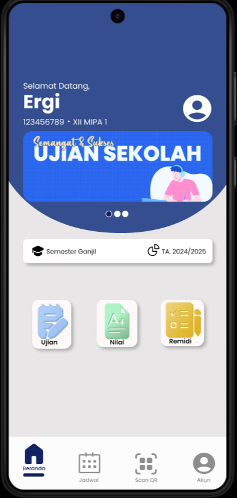

About Me
Saya adalah mahasiswa semester 1 di program studi Teknik Informatika saya memiliki ketertarikan terhadap teknologi.
Selama semester pertama ini, saya telah memperkenalkan diri saya pada berbagai konsep dasar dalam
dunia ilmu komputer, mulai dari pemrograman, algoritma dan struktur data yang menjadi dasar dalam penyelesaian masalah teknologi, Impian saya dalam jangka panjang adalah untuk menjadi seorang profesional di bidang pengembangan perangkat lunak atau kecerdasan buatan yang mampu menciptakan solusi-solusi inovatif bagi permasalahan masyarakat.
Skill
Berikut adalah skill yang saya miliki dalam pengembangan web dan pemrograman back-end
 HTML
HTML
 CSS
CSS
 Python
Python
 PHP
PHP
 Figma
Figma
Project
Berikut adalah beberapa project yang telah saya kerjakan menggunakan berbagai teknologi web development.

Desain Figma
Desain tampilan apklikasi

Website Toko online
Desain Tampilan UI